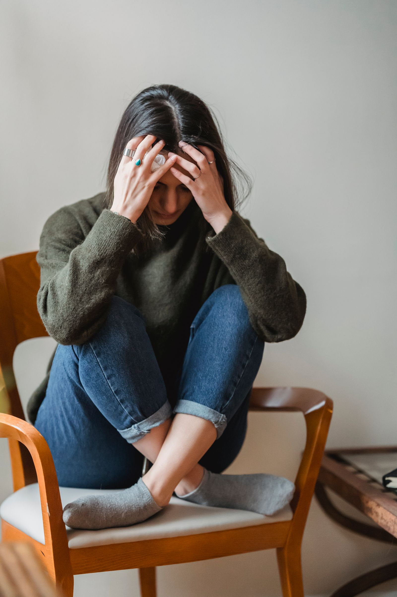
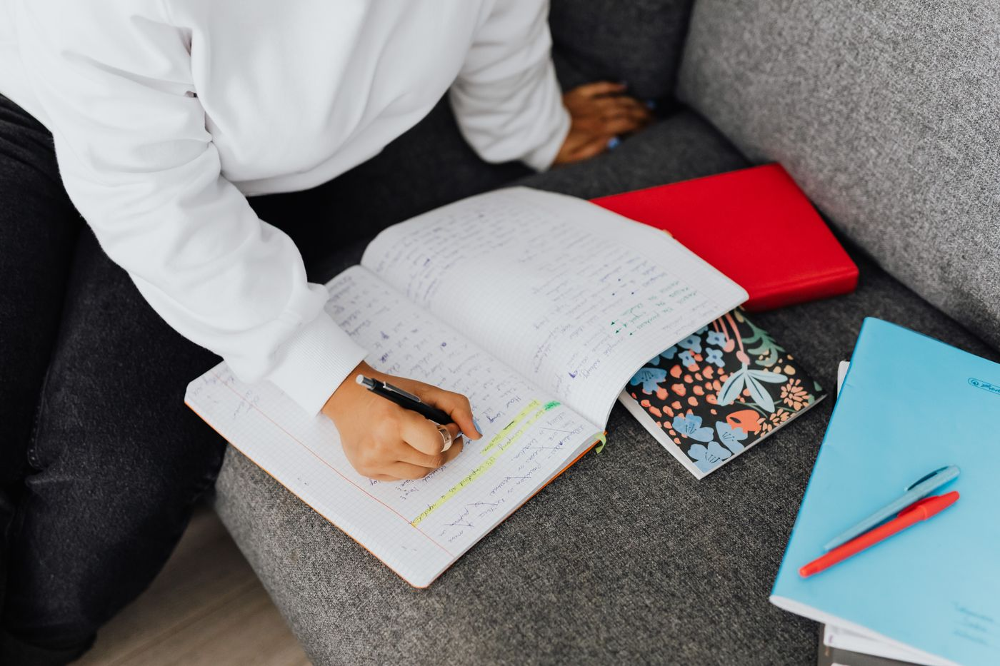

Vælg det, du har brug for
Her kan du læse om angst og tankemylder, om at passe på dig selv og en ven, og om små vaner i hverdagen. Vælg ét emne. Du behøver ikke at læse det hele på én gang.

Angst og tankemylder
Angst er en reaktion, kroppen bruger, når noget føles usikkert eller vigtigt. Hjertet kan slå hurtigere, maven kan snøre sig sammen, og vejrtrækningen kan blive kort. Det kan ske før en fremlæggelse, blandt mange mennesker, eller uden at du kan pege på én bestemt årsag.
Tankemylder er, når de samme tanker bliver ved med at køre. Det kan være svært at falde ned, fordi hovedet leder efter et svar med det samme. Angst er almindeligt blandt unge, og det ser forskelligt ud fra person til person.
Strategier i hverdagen
-
Åndedræt og pauser
Sæt fødderne i gulvet. Træk vejret langsomt ind, hold et kort øjeblik, og pust roligt ud. En lille pause kan gøre det lettere at mærke, at du er her lige nu.
-
Skriv dine tanker ned
Skriv det, der kører i hovedet, ned uden at rette det. Når tankerne står på papir, behøver du ikke at holde dem alle i hovedet på én gang.

Trivsel og velvære
Trivsel er ikke en dag uden tunge tanker. Det er at have nok ro og støtte til at komme igennem dagen. Det gælder dig, og det gælder en ven.
Passe på dig selv og en ven
-

Dig selv
Vælg én ting i dag, der føles mulig. Det kan være at spise, gå udenfor eller skrive til nogen. Én ting er nok.
-

En ven
Spørg hvordan det går, og lyt færdig. Du behøver ikke at finde en løsning. Hvis du er bekymret, kan I sammen se, hvor I kan finde hjælp.
Ro i hverdagen
Ro behøver ikke være en tom kalender. Det kan være en lille vane, du kan gentage, også på en travl dag.
To små vaner
-

Samme tid, lille pause
Vælg et tidspunkt, du kender, for eksempel når du kommer hjem. Brug ti minutter uden at skulle nå noget.
-
Én ting ad gangen
Når dagen føles fuld, så skriv tre ting ned og lav den mindste først. Så har hovedet et sted at starte.
Hvor kan du finde mere hjælp?
Kilder og relevante støttetilbud, hvis du vil læse mere eller tale med nogen.
-
Livslinien
Rådgivning hele døgnet. Ring 70 201 201.
-
Børnetelefonen
Rådgivning til børn og unge. Ring 116 111.
-
Mindhelper
Viden og øvelser om angst, tanker og trivsel, skrevet til unge.
-
Psykiatrifonden
Forklaringer på angst, og hvornår det kan være en god idé at søge hjælp.
-
Sundhedsstyrelsen
Offentlig viden om mental sundhed.
Har du brug for at tale med nogen nu, kan du ringe til Livslinien på 70 201 201. Ved akut fare ring 112.